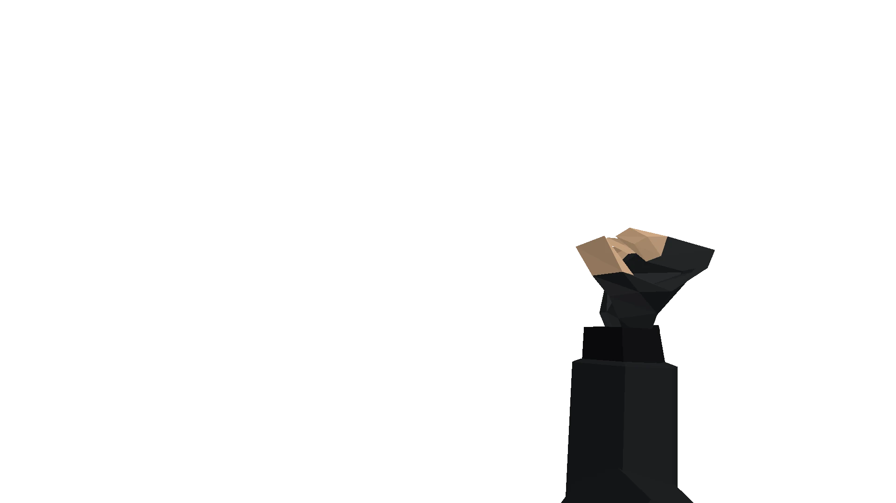
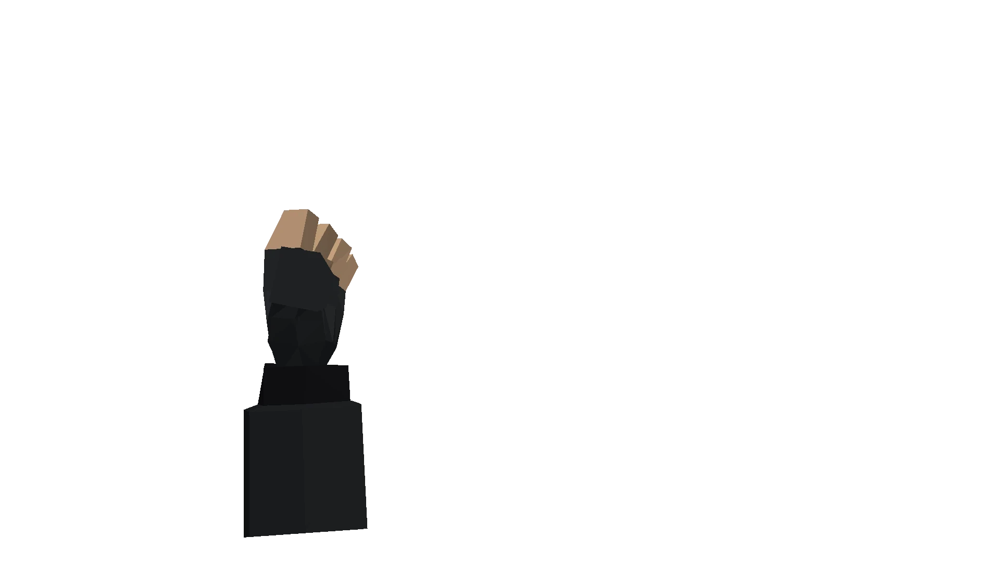
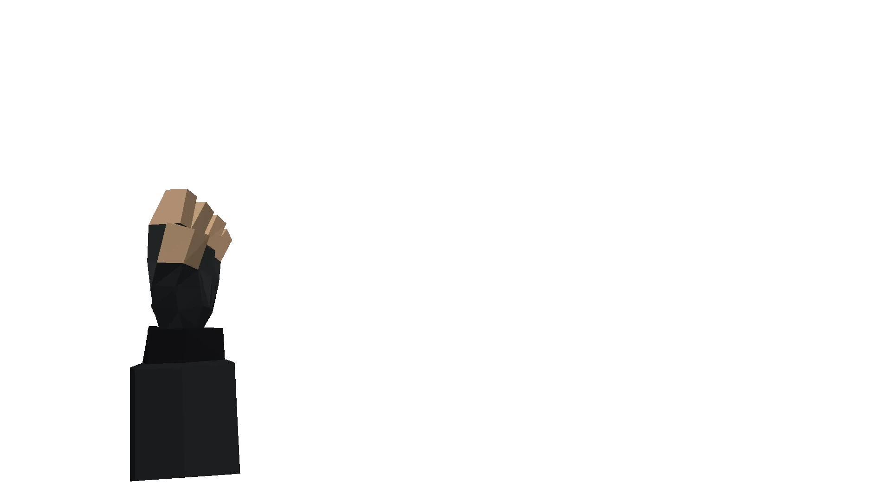
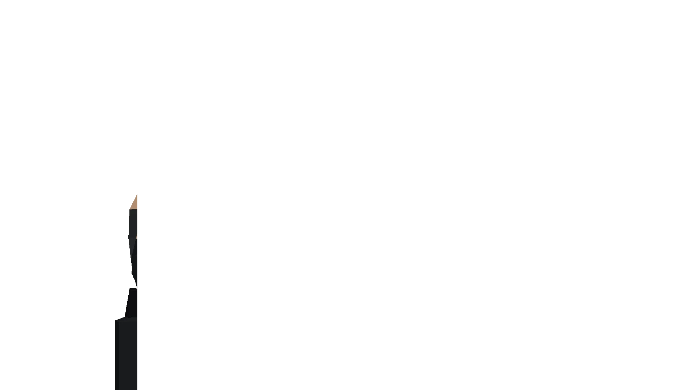
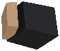

Tabto open Commander PDA






Close
Home
Map
Roster
Comms
Settings
Field
The music is a placeholder track.
| Tab | Open or put away the Commander PDA |
| W A S D | Walk the commander |
| Shift | Sprint while walking |
| Q / E | Turn the camera |
| Mouse wheel | Zoom the view |
| F | Camera follows the commander again |
| Map: left click | Select a unit (or yourself) |
| Map: hold + drag | Select every unit in a square |
| Map: right click | Commands for the selection at that spot |
| Map: hold right click | About whatever is under the cursor |
| Map: hold S | Scan the building under the cursor |
| Map: wheel | Zoom, one step per notch |
| Map: middle drag / WASD | Pan the map |
| C | Fly the map to the commander |
| E | Answer a unit's call |
| Tab | Put the PDA away |
| P | Stance of the selected group |
| T | Day speed: normal, fast, paused |
| N | Army size: 2k, 20k, 100k, 500k |
| L | Frame cap: off, 60, 30 |
| 1 2 3 4 | Ships, ground, planet, star system (debug) |
| Space | Launch to the other planet (star system view) |
| O / R | Outlines / chunky pixels (debug) |
Debug page (blueprints, terrain chunks)
Loading…
No contact with other commanders yet.
Requests and other commanders arrive once the basic systems are in.
You are playing an early prototype of Scalia. The gameplay is a heavy subject of change: what you see today may work differently, or be gone, tomorrow.